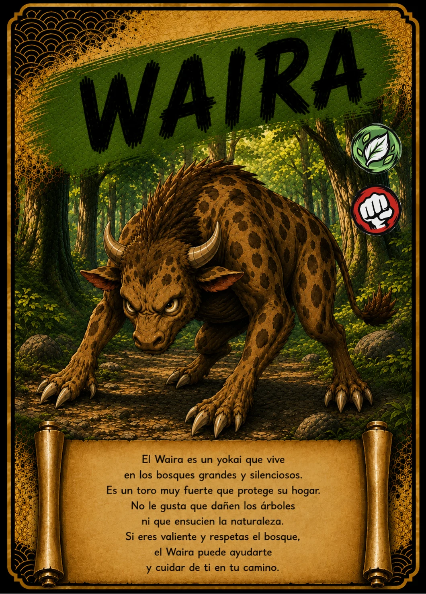

↗ Tocá la carta para verla en grande
EL ÁLBUM TAIKARDS · CARTA 45 / 48
WAIRA
El habitante del bosque silencioso
- Naturaleza / elemento
- 🌿 Bosque
- Tipo
- 👊 Ataque
📖 Te cuento mi historia
Entre las sombras de un bosque espeso se mueve Waira. La ilustración de esta carta le da cuernos, garras y un cuerpo poderoso. En la adaptación de TAIKARDS protege su hogar y no le gusta que dañen los árboles. Su historia transforma el misterio del bosque en una invitación a cuidar la naturaleza, desde la rama más alta hasta los pequeños seres del suelo.
Versión infantil basada en la carta de TAIKARDS. Sus personajes y aventuras pueden ser diferentes de las leyendas tradicionales. La naturaleza y el tipo corresponden a la clasificación del juego.
← Volver a todas las cartas